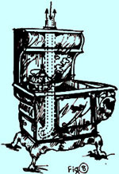
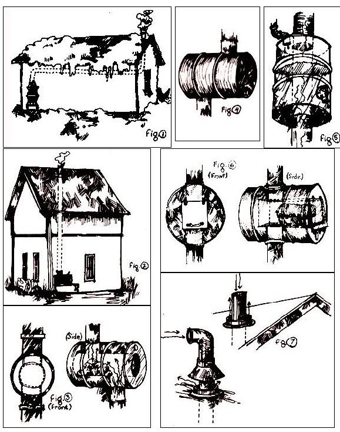

With all the discussion that's going on about natural power for home use, no one yet seems to have expounded at length on one source of energy that's readily available to homesteaders: namely, the heat that goes up the old stovepipe. Seems a shame to let those calories get away ... especially when you think of them in terms of firewood and all the energy you've expended cutting it.
Although I've never actually measured the B.t.u.'s roaring out the top end of a stovepipe, I have toasted bread (in about one second) and boiled pots of water in the hot blast from a small stove. Perhaps some thermal buff out there in MOTHERland would like to do the measurements on the quantity of heat that escapes up the flue . . . given various-sized stoves, different lengths and diameters of stovepipe and varying intensities of flame in the firebox.At any rate, while the rest of us are waiting for such a report, here are a few suggestions for utilizing some of that energy.
[1] Use the stovepipe itself as a radiant heater, the way many pioneer builders did in New England, here in Ontario and elsewhere. In a single-storied structure, put the stove at one end of the building and carry the pipe horizontally to the other end and then out as shown in Fig. 1.
When there's more than one story, just run the vent straight up through the rooms above (see Fig. 2). Whatever you do, though, don't put your stovepipe up in the manner depicted on the cover of MOTHER NO. 18!
[2] The Palace Grand in Dawson City, Yukon Territory has a unique (the owners claim) variation on Suggestion Number 1. This device-which they call a double stove-is simply a large hot air chamber part way up the stovepipe that traps some of the escaping heat and radiates it into the room.
The model in Dawson is a bit complicated, and consists of a modified 45-gallon steel drum (see Fig. 3). 1 imagine that an unmodified steel drum (Fig. 4) would also work. Either version would be more efficient filled with pebbles or stones, which would absorb heat-sauna-style-and radiate it back even after the stove itself had burned low. Don't pack in the rocks very snugly, though, or you'll kill the draft.
[3] Instead of an air chamber, put a water tank (Fig. 5) on the stovepipe. This involves a little plumbing since you have to run the pipe through the middle of the water container. You'll need a tap at the bottom of the tank and some sort of inlet at the top (this could be as elaborate as a float valve hooked up to your main water source to keep the reservoir full automatically, or as simple as a movable lid that allows you to dump in replacement water by hand). There you are ... a convenient hot water supply.
Although insulation will keep the water in the tank hot longer, I'd advise against it. In the winter, when the stove is going all the time, the water will never get cool anyhow ... and the bare metal of the reservoir will act as a radiator.
[4] Put an oven (Fig. 6) in the stovepipe. Units that fit into a standard smoke vent used to be available commercially (and as far as / know they still are ... from the Louisville Tin and Stove Company, 737 South 13th Street, Louisville, Kentucky 402l0-MOTHER). Or you can make your own.
[5] In MOTHER NO. 18 (pg. 112), Bill Lange suggested a concentric double stovepipe in which one of the conduits draws outside air into the heater and warms it in the process.
I suggest using the center pipe as the intake and extending it a couple of feet higher at the upper end than the surrounding output duct (see Fig. 7). At the lower-or stove-end, the intake pipe should be taken right through the bottom of the firebox into the ash box chamber (Fig. 8).
This arrangement, of course, would necessitate some modification of the damper so, instead, you could run the intake pipe around the damper ... or eliminate the damper itself and regulate the firebox by a smaller valve in the intake pipe only.
[6] Finally, and most elaborately of all, you could use that stovepipe heat to boil water to run a small steam engine, either a conventional piston type or a more efficient turbine. The steam engine in turn could power a small generator to supply a modest amount of electricity ... sufficient, maybe, to operate a few light bulbs.
As a matter of fact, I'm planning a stovepipe-powered turbine myself and would like to enlist the help of MOTHER's readers. Can anyone out there tell me how much current is needed to operate two or three small fluorescent bulbs, how small a generator would suffice to provide that current and how much power a steam engine would have to develop to run such a generator? If you have technical data that might help me out, I'd like to hear from you. Here's my address:
A. Michael Wassil
#4-199 Dunn Ave.
Toronto 3, Ontario, Canada
|
 |
 |
|